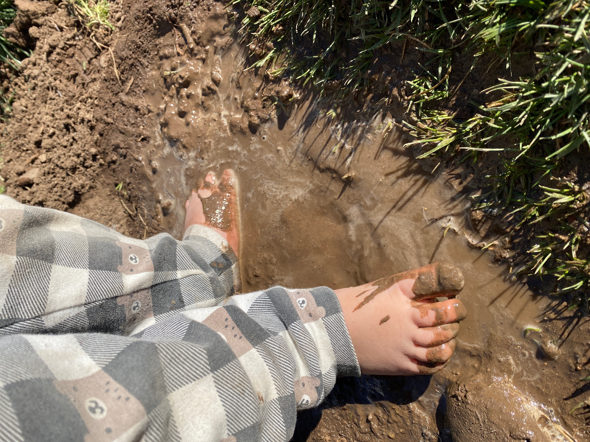

I grew up running to the mailbox. Not for bills — for the particular magic of something arriving that someone sent just for you. Words written by hand, on paper, that you can hold and read again.
That magic is still there. I've never stopped believing in it. And so every month, I sit down and write — to you, specifically. Not to a subscriber. To you.
This is Moss & Mail. A monthly letter club for women who are craving something slower, something real, something that arrives in the mailbox and makes the day feel different.
A personal letter from Kayli, written by hand on beautiful stationery. Sealed with a wax seal. Addressed to you — not a demographic, not a subscriber. You.
3–5 seeds for herbs or flowers — grow something wherever you are. A windowsill works. So does a yard, a porch, or a small pot on a kitchen counter.
Kayli's recipe, handwritten on a card you can keep. Something to make, something to taste, something to look forward to. The first one: Iced Rose Matcha Collagen Latte.
A sensory invitation to go outside — or to your nearest houseplant — and notice the world. It takes five minutes. It changes the shape of a day.
Original art made by Kayli's children. Handmade, real, irreplaceable — the kind of thing you didn't know you needed until it's in your hands.
A wax-sealed postcard with a stamp already on it. So you can sit down and send something to someone you love. Right now. Today.
Something to steep. Something warm to wrap your hands around while you read.
A bookmark carrying a quote Kayli has been sitting with from her reading life. Selected because it earned its place there.
A QR code linking to this month's curated playlist. Music chosen to go with the season, the theme, the mood of the letter.



The slow life is not somewhere else. It's this.


A few years ago, I cleared our calendar. We moved somewhere with mountains and silence, and I started asking what I actually wanted my life to look like.
What came back, every time: the kitchen table. The unhurried morning. The letter half-written. The child leading the pace on a walk. The garden teaching patience. Beauty not as a destination — as a daily practice.
Moss & Mail grew out of that. Out of a belief that women who are tired and trying and love beautiful things deserve to be reminded: the slower life is not somewhere else. It's available right now, in whatever space you have, with whatever you have in it.
Kayli Angeleaux is a Utah-based creative entrepreneur, slow living advocate, and founder of Moss & Mail, a monthly handwritten letter subscription club. She creates content at the intersection of intentional motherhood, Charlotte Mason homeschooling philosophy, and analog living.
"It is the small everyday deed of ordinary folks that keep the darkness at bay.
Small acts of kindness and love." — often attributed to Tolkien
A handwritten letter from Kayli. Seeds. A recipe card. Tea. A child's artwork. A postcard already stamped. A playlist. A nature prompt. A bookmark. Everything that fits in one envelope, chosen because it matters.
Monthly subscription · Ships from Utah
Cancel any time. No urgency language here — ever.
Give as a gift →Moss & Mail is a monthly handwritten letter subscription club founded by Kayli Angeleaux in Utah. Each month, subscribers receive a curated envelope with a personal handwritten letter, seed packet, recipe card, children's artwork, wax-sealed postcard with stamp, nature journaling prompt, tea bag, bookmark, and Spotify QR code.
Each monthly Moss & Mail envelope includes: a personal handwritten letter from Kayli, a seed packet, a recipe card, an original children's artwork print, a wax-sealed postcard with postage stamp, a nature journaling prompt card, a tea bag, a bookmark, and a Spotify QR code linking to a curated playlist. Everything is chosen because it matters — nothing is filler.
Moss & Mail is designed for stay-at-home moms, homeschooling mothers, grandmothers raising grandchildren, and any woman seeking a slower, more intentional pace of life. If you love beautiful things and haven't had much time for them lately — this is for you. It also makes a meaningful gift for Mother's Day, birthdays, Christmas, or just because.
Yes — that is exactly what Moss & Mail is. Each letter is written by hand, by Kayli, on beautiful stationery, sealed with a wax seal. Not printed. Not typed. Handwritten, with a pen, for you.
Moss & Mail is deeply inspired by Charlotte Mason philosophy — nature study, living books, and the cultivation of beauty in everyday life. The nature prompts, seed packets, and handwritten letter format are all aligned with Charlotte Mason principles, making Moss & Mail a natural complement to a Charlotte Mason homeschool or morning basket.
Yes. Moss & Mail subscriptions make a meaningful gift for moms, grandmothers, homeschool families, and anyone who loves receiving real mail. If you'd like to give a gift subscription, email hello@mossandmail.com and Kayli will take care of it.
The slower life isn't a destination — it's a series of small, choosable moments available right now. A cup of tea. A walk where you let your child lead the pace. A letter read twice. Moss & Mail is built around this belief: that beauty, connection, and a slower life are still possible. One letter at a time.